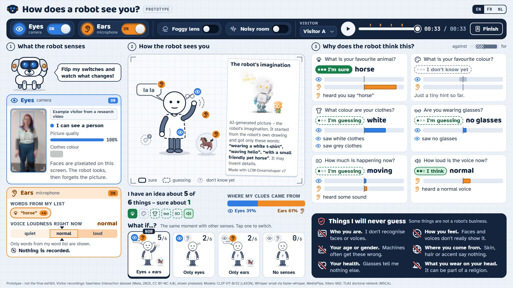
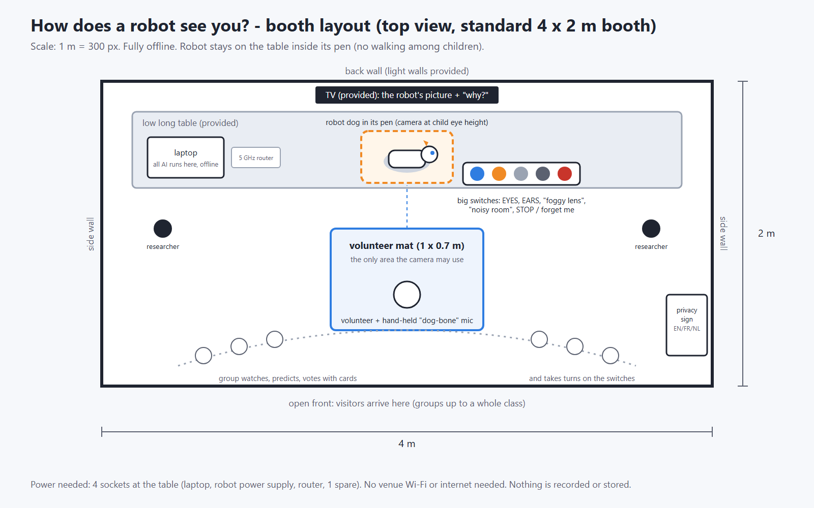
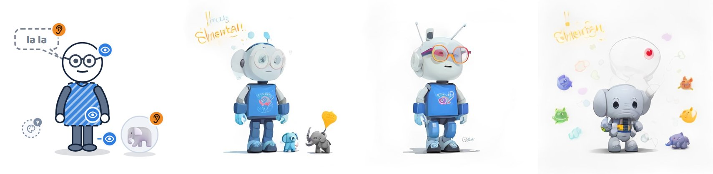
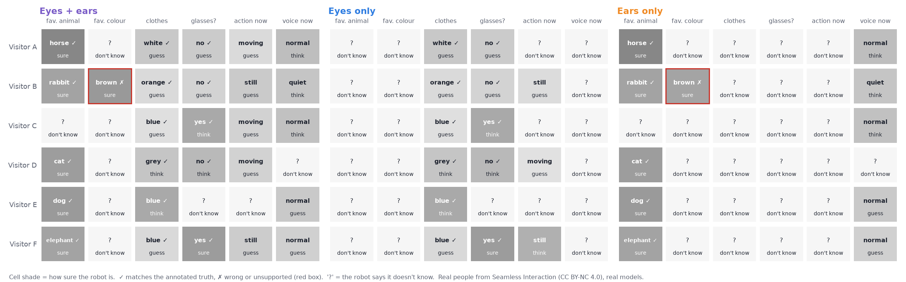
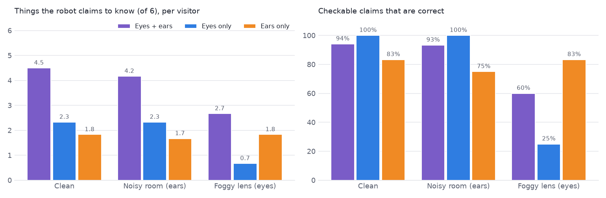
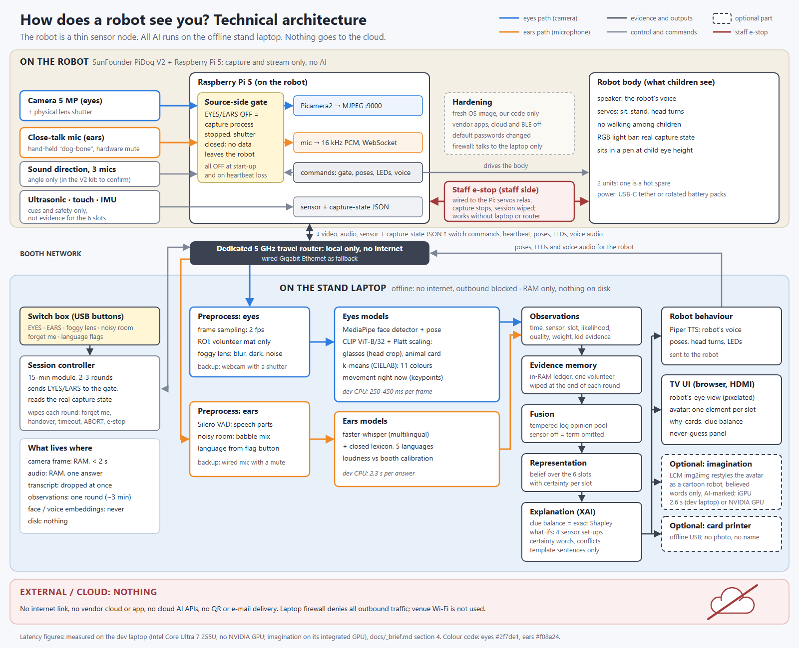

How does a robot see you?
Eyes, ears and an honest robot dog
A small robot dog builds a picture of a visitor from its camera and microphone. Children switch its senses on and off and watch what it knows, how sure it is, why it thinks so, and what it will never try to guess.

Demo video (3 min 31 s)
The prototype's own screen, driven through all sensor settings with real recordings. You hear the visitors' own voices, and in the noisy-room scenes you hear exactly the crowd mix the robot heard. The robot's lines are spoken by an offline voice, and captions explain each step.
- Demo A: eyes + ears together.
- Demo B and Demo C: eyes only, then ears only.
- Demo D: why the robot thinks what it thinks, including a confident mistake.
- Trouble: a noisy room, other voices in the crowd, and a foggy lens.
- Demo E: the picture building up over time.
- Ending: the imagination picture, the "never guess" promises and the take-home card.
prototype/video/render_video.py from the real UI and real model outputs. Visitor recordings: Seamless Interaction (Meta, CC BY-NC 4.0), shown pixelated. This is the partner demo, not the 120-second application video, which must show the lead researcher.Core idea
A robot does not know you. It collects clues from imperfect sensors and builds an internal picture of you. That picture changes with the senses it may use, and it can be wrong. Our booth turns this into a hands-on activity.
- The robot's representation is a belief over six child-safe questions: favourite animal, favourite colour, clothes colour, glasses, how much is happening right now, and the voice it hears right now. Each answer carries a certainty word (sure, I think, guessing, don't know).
- The screen draws it as a cartoon. Every part of the drawing is one answer. Unsure parts are faded or dashed, unknown parts are a "?", and a badge shows which sense found each part: eyes (camera) or ears (microphone).
- Big switches turn the eyes and ears on and off, or add trouble ("foggy lens", "noisy room"). The picture and its explanation change at once.
- "Why does the robot think this?" cards show the clues from each sense, computed from the same numbers the robot uses. A panel lists the things it will never guess, and why.
The working prototype already does all of this offline on a laptop, on recordings of real people.
What children learn
| Concept | The moment they experience it |
|---|---|
| AI only sees the information available to it | All senses off: the drawing is a grey "?" |
| Different sensors give different information | Eyes find the clothes colour; ears find the favourite animal; neither can do the other's job |
| Combining sensors changes the result | Both on: the picture is the most complete; the "what if?" strip shows all four combinations |
| Inference is not certainty | Certainty words and faded parts; "I'm guessing your favourite colour from your clothes" |
| AI can make mistakes | "Fool the robot": show a cat card but say "dog"; a word heard out of context makes it confidently wrong |
| Explanations show the evidence | Clue balance per sense, and evidence cards with times ("heard you say 'horse' at 0:05") |
| Removing information changes conclusions | Flip a switch: the answers that sense supported turn into "I don't know yet" |
| Some things AI should never guess | "Things I will never guess": who you are, feelings, age, gender, origin, health, headwear |
Age layers: icons and the cartoon for 7-10; clue balance and certainty words for 11-14; adding up log-odds "clues", bias and the EU AI Act for 15-18.
Visitor experience
The fair sends school groups of up to a whole class for about 15 minutes. We therefore run a 15-minute group module, with 2-3 volunteers taking short turns while the rest of the group operates switches and predicts.
15 minutes, whole group
- 0-2 min Which senses do you use to recognise a friend? The robot introduces itself as a computer program.
- 2-12 min 2-3 volunteer rounds of about 3 min each; the group votes on predictions and flips switches.
- 12-14 min Reveal: which sense helped most, when was it sure but wrong, what it will never guess.
- 14-15 min "Forget me": a pupil presses the button and the robot wipes its memory.
Booth

One volunteer round, about 3 minutes
- Meet. The volunteer steps onto the mat; nothing is on yet. "Hi! I'm a robot dog, a computer program. My eyes and ears are off until you switch them on."
- Predict. The group votes: what will the robot get right, and how sure will it be?
- Eyes on. The camera looks only at the mat. Within seconds the drawing gets the clothes colour (with an eye badge) and maybe glasses, still faded.
- Ears on. "What is your favourite animal? You can say it or show me a picture card." The animal appears with an ear badge. "And your favourite colour?"
- Why? A pupil picks a card: "I'm sure your favourite animal is a horse, because my ears heard you say 'horse'." The clue balance shows which sense pushed the answer.
- Switch and trouble. Eyes off, ears off, foggy lens, noisy room. The group checks its predictions. The robot answers neutrally: "OK, I'll only use what you tell me."
- Fool the robot. Show a cat card but say "dog": "My senses disagree. For this question I trust my ears more."
- End. Optional printed card with the drawing and three facts, no photo and no name. Then "Now I forget everything. Bye!"
The science
The booth shows our two PhD questions in child-sized form. Sensor fusion (DC5): combine senses, keep working when one fails, and know when you are unsure. Explainable AI (DC7): show why a decision was made, faithfully.
Representation and memory
The robot's memory for one visitor is an in-RAM evidence ledger. Each row records a time, a sense, a question, a likelihood over the answers, a signal quality and a child-readable clue. There are no images, audio, transcripts or embeddings, and the ledger is wiped when the visitor leaves. The representation is the belief computed from this ledger: a training-free concept bottleneck over a closed, child-safe vocabulary.
Fusion
- r, relevance: clothes colour is only a weak hint about a favourite colour (r = 0.35); a spoken word is direct (r = 1).
- weight: one video frame counts 0.2-0.3 (frames are correlated); one spoken word counts 2.
- A sense that is off contributes no term. That is exact marginalisation, the same thing the physical switch does. We never feed a black frame or silence, which would be fake evidence.
Explanations that cannot lie about the model
We assessed 20+ XAI methods for this pipeline (research/07). We rejected attention maps, LIME, pixel-level SHAP/RISE, MM-SHAP and LLM-written explanations for live use, because they are unfaithful, slow, or answer a different question.
Perception
Eyes (camera)
- MediaPipe face box and body pose
- Clothes colour: k-means in CIELAB on the upper chest, 11 colour names
- Glasses: CLIP ViT-B/32 with calibrated contrast prompts
- Animal picture card: CLIP prompts
- Movement: keypoint speed
Ears (microphone)
- Silero voice activity detection
- faster-whisper speech recognition (multilingual)
- A closed word list in FR, NL, EN, DE and PL; only matched words leave the module, never the transcript
- Loudness against a booth calibration
The robot's imagination (optional)
A small image generator (LCM-Dreamshaper, MIT licence) restyles the robot's own drawing into a cartoon robot friend. Its prompt is made only of the words the robot believes. It never sees the camera image and never draws a person. Images are labelled on screen and carry machine-readable "AI-generated" metadata (AI Act Art. 50(2)). It takes 2.6 s on the laptop's integrated GPU.

Prototype results
We tested the full pipeline before buying a robot. It uses real models, runs offline on a laptop CPU, and was run on six real adults from Meta's Seamless Interaction dataset (CC BY-NC 4.0, shown pixelated). These visitors talk freely about their pets and are not answering our questions, so the setting is harder than the booth.
| Sensors (clean input) | Things known of 6 | Claims correct | Animal | Clothes colour | Glasses |
|---|---|---|---|---|---|
| Eyes + ears | 4.5 | 94% (17) | 5/6 | 6/6 | 5/6 |
| Eyes only | 2.3 | 100% (11) | 0/6 | 6/6 | 5/6 |
| Ears only | 1.8 | 83% (6) | 5/6 | 0/6 | 0/6 |

- Each sense brings different evidence, and fusion knows the most. This is the core message, and it holds on real data.
- Noise makes the robot unsure more often than wrong. In crowd babble at 0 dB, the robot heard the right colour word in 27% of 192 GRID utterances (80% clean) and a wrong one in only 0.5%. In the noisy-room variant the animal drops from 5/6 to 3/6, and the remaining claims are still 93% correct.
- Other voices can inject false clues. In the noisy-room variant, the robot became sure that Visitor E's favourite colour is white. It heard "white" four times, but from the crowd, not from her.
- A degraded sense can also mislead. Through the foggy lens, clothes look dark and eyes-only claims are only 25% correct. This is a lesson for visitors and a to-do for us (a stronger quality gate).
- AI can be sure and wrong. Visitor B said "Snow White" and "ginger brown" about her rabbit, and the robot became sure her favourite colour is brown. In the booth, words count only as answers to the robot's own question.
- Far-field speech fails. For Visitor C, both Whisper small and large-v3-turbo missed "my dog", so the robot honestly said "I don't know". This is why the booth uses a hand-held close-talk microphone.
- Glasses detection is calibrated. On 219 verified adult faces from Open Images: AUROC 0.91, calibration error 0.08, and 93% of "I'm sure" claims correct. In one case the robot spotted thin transparent glasses that our own first annotation had missed.

Hardware and budget
| Option | Price | Camera / mic | Verdict |
|---|---|---|---|
| SunFounder PiDog V2 + Raspberry Pi 5 4 GB | USD 179.99 kit + Pi | 5 MP camera streamed as MJPEG; MEMS mic with raw audio; plus ultrasonic, touch, IMU, speaker | recommended Two units (one hot spare) cost about €770 landed |
| Luwu XGO-lite3 / DOGZILLA-Lite | USD 599 / 639 | 5 MP camera, MEMS mic(s), speaker, screen | fallback Assembled and quiet; slightly over budget after VAT; vendor cloud AI must be removed |
| Hiwonder PuppyPi Advanced | USD 640+ | 480p camera, USB mic box | Robust, but over budget with a weak camera |
| Mini Pupper 2, Freenove, Petoi Bittle X, MechDog | USD 130-649 | Missing camera or raw mic, or a duty-cycle limit | not suitable |
| Unitree Go2 Air | ~USD 1,600+ | No official SDK on Air; documented security issues | out of scope |
Budget, honestly:
- USD 600 covers the robot part: one PiDog with a Pi and spares, or two kits at list price. Two landed units cost about €770.
- The whole booth also needs:
- a close-talk wireless mic, a USB switch box, a lens shutter, a pen and a travel router: about €400-800;
- an optional offline card printer;
- a laptop, reused from SUT if possible (otherwise about €1,200-1,500).
- The TV is provided by the fair.
- No NVIDIA GPU is required: everything, including the imagination, ran on the dev laptop's CPU and integrated GPU.
Procurement risk: the Pi 5 4 GB is backordered in Poland to about 13 Nov 2026 (the 8 GB is in stock). The PiDog ships from China with 23% import VAT. There are open GitHub issues about Robot HAT V5 reliability, hence the spare unit. Order soon after selection (28 Oct).
Architecture
The robot is a thin, honest sensor node. All AI runs on the stand laptop, which is offline on a dedicated local router. Nothing goes to the cloud. A sensor that is switched off is stopped at the source.

We compared three options. Mostly onboard fails because a Pi 5 cannot run CLIP, Whisper and the generator together. Hybrid with cloud fails because children's data would leave the booth and it would depend on venue Wi-Fi. We chose distributed local.
Ethics and privacy
The GDPR and the EU AI Act both apply at the fair: live processing is processing even without storage.
- The design avoids emotion inference (Art. 5(1)(f)) and any biometric categorisation (Art. 5(1)(g), Art. 50(3)).
- The robot discloses that it is an AI in child-friendly words (Art. 50(1); robot pets are explicitly in scope), and generated images are machine-marked (Art. 50(2)).
- Lawful basis: public task (SUT's science-dissemination duty), with the green "start" buttons as an ethical opt-in.
- A short DPIA with the SUT Data Protection Officer before the fair. No research data is collected at the fair.
- Who you areNo face or voice recognition, no embeddings.
- How you feelNo emotion inference.
- Age or genderNot estimated from face or voice.
- Where you come fromNo skin, hair or accent analysis.
- Your healthGlasses tell it nothing else.
- HeadwearRemoved after review: it can reveal religion.
Other controls:
- Sensors are off by default, with a physical lens shutter.
- The camera only looks at the volunteer mat, and the screen shows a pixelated view.
- Data is held in RAM only and the ledger is wiped per visitor. Nothing is written to disk.
- The robot uses a closed vocabulary, and an adult is present.
- There is no QR code and no email. The optional card has no photo and no name.
Why it fits Science is Wonderful
| Criterion | How we meet it |
|---|---|
| Feasibility | The software already works end to end on a laptop, offline. The hardware is off the shelf and cheap, with a spare unit. If the robot fails, the activity falls back to a laptop camera and mic, or to paper "clue cards". |
| Suitability | A 15-minute group module with hands-on switches, predictions and "fool the robot" for ages 7-18. The interface is trilingual (FR/NL/EN) with pictograms. |
| Impact | Phones, games and smart speakers sense children every day. The booth shows what a machine can and cannot know, and that some guesses are off-limits. |
| Research at the core | Sensor fusion under failure and uncertainty (DC5) and faithful explanations (DC7) are exactly what the switches and "why" cards show. |
What we changed from the first idea, and why
| First idea | Problem | Now |
|---|---|---|
| 3-5 min with one visitor | Groups of up to a whole class for 15 min | Group module with 2-3 volunteer rounds |
| AI-generated portrait of the visitor | Invents face, skin, age and gender; deep-fake and AI Act issues; not faithful | Procedural drawing where every element is one inferred answer; optional robot-mascot "imagination" made only from words |
| "Adult or child?", age, emotion | Biometric categorisation and emotion inference; inaccurate on children; legally risky | Observable, momentary signals plus answers the child chooses to give |
| Free conversation with an LLM | Unpredictable with children; explanations would not be faithful | Two scripted questions, closed word list, template explanations |
| Robot dog walking among children | Safety risk, servo wear, noise | Robot sits in a pen at child eye height and gestures |
| Microphone on the robot | Servo noise and an 80 dB hall; far-field ASR failed in our tests | Hand-held close-talk "dog-bone" mic, still the robot's ears |
| QR code or email delivery | Personal data leaves the booth | Nothing by default plus a "forget me" moment; optional offline card with no photo |
Decisions needed before Monday 5 October
- Lead applicant (Person 1): DC7 or DC5, and a third team member, ideally a French or Dutch speaker.
- Supervisor approval for 4 Nov 2026 (online workshop) and 16-19 Mar 2027 (in person), checked against secondments.
- Funding line for the robot part and booth extras (TUAI or SUT), and whether a laptop can be reused.
- The lead records the 120-second video of themselves (script in the application pack; the prototype video may appear as a short insert only).
- Everyone rewrites the form texts in their own words. The call checks for a gap between AI-written proposals and delivery.
After selection (28 Oct), the steps are:
- order the hardware;
- connect the robot in November;
- calibrate on consented adult recordings in December-January;
- finish the DPIA, translations and a rehearsal at an SUT open day by February.
Files in the project folder
- Interactive demo: open the exhibition screen (6 visitors, all switches)
prototype/video/out/how_does_a_robot_see_you.mp4andstoryboard.md: demo video and its scriptdocs/08_siw_application_pack.md: form-ready texts with measured lengths, video script, checklistdocs/02_architecture.md,03_hardware.md,04_methodology.md,06_exhibition_walkthrough.md,09_ethics_privacy.mdprototype/: code, tests, experiments, the exhibition screen (demo/), live mode (live/), demo video rendererresearch/01-10: verified desk research with sources: call, robots, audio, vision, generative models, XAI, datasets, law, exhibition design